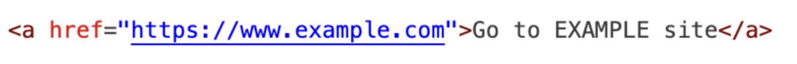

HTML Fundamentals
What is HTML for?
HTML provides structure, and the CSS handles all presentation and style.
Tags we used last week
- title
- h1 through h6
- paragraph
- bold
- emphasize
- horizontal line
- break
- button
- lists
- anchor
- image
Attributes
Attributes are special words used **inside the opening tag** of an element to **provide extra information** about that element. They always follow a name=value structure.
Example: The Anchor Tag
This tag is used to create hyperlinks. The most common attribute is href, which indicates the link's destination URL.
